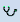
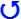

Configuring Symbol Instances
Select the topic related to your task:
Assign a Data Point to a Symbol Instance on a Graphic

NOTE:
You must have Graphic Editor Application rights to create, edit, or delete a symbol. Graphic Editor level access is defined by the Security application.
Data points are assigned to symbol instances on a graphic in order to display real-time values.
- In the Graphics Editor, you are in Design mode and have a graphic open that contains one or more symbol instances.
- You have selected the symbol instance you want to assign the data point to.
- In System Browser, select Management View.
- Select Project > Field Networks > Hardware.
- Navigate to the data point you want you assign to the symbol instance.
- Drag the data point over the symbol instance on your graphic.
- In the Properties View, the Symbol Instance > Object Reference property is highlighted and the data point address displays.
- (Optional) Update the Symbol Instance > Precision and Unit properties, as needed.
- (Optional) From the Home tab, in the Modes group, click Test

to switch modes and verify that you can see the live values from the data point on the graphic. - The symbol instance displays the current value of the data point.
- Repeat with each symbol instance as needed.
Use a Symbol Instance
- You want to modify the originating symbol of a symbol instance.
- Navigate to the symbol instance on the graphic canvas you want to modify.
- Right-click the Symbol Instance.
- Select Symbol Instance and then Edit.
- The originating symbol opens and displays as a tabbed graphic in the work pane.
Modify Elements in a Symbol Instance
A symbol instance is made up of one or more elements. If the element has a unique ID number associated with it, it can be selected on the canvas and modified. If the element does not have a unique ID number associated with it, it cannot be selected or modified within the symbol instance.
- You have a symbol instance on the canvas and you want to modify one or more elements within the symbol instance.
- Press SHIFT and select the element in the symbol instance you want to modify.
- The element is active, instead of the entire symbol instance.
- Make your changes, such as resize, add color, change color, etc.
NOTE: When you select the symbol instance, Revert to Default
displays just outside the Symbol Instance. If you move your cursor over the arrow, it lists all the changes made to the elements within the symbol instance. To go back to the default state of the symbol instance, right-click and select Revert to Default. All changes to the symbol instances are cleared. - Click Save
 .
.
Replace Symbol Instances
When you right-click a symbol instance on the canvas, you can view and replace the selected symbol instance with a symbol from the same object model or function library. Using the symbol style filter from the ribbon, you can determine which symbols will be displayed for you to choose from.
- You have a symbol instance on the canvas and you want to replace it with another symbol from the same object model or functions library.
- Select Option > Symbol Options group, click the arrow of the drop-down menu to select a style for the symbols you want to view.
- (Optional) Click the symbol filter so that it is enabled (icon background is gray) to display the symbols from both the object model and the function libraries. If unselected, only the symbols from the function library display. If however, there are no associated symbols in the function library, only then will the symbols from the object model display.
- Right-click the symbol instance on the canvas that you want to replace.
- With your mouse, hover over Symbol Instance, and then hover over Replace.
- The symbol library with the associated symbols display.
- Click the symbol in the library you want to replace the symbol on the canvas with.
- The symbol on the canvas is updated and replaced with the selected symbol from the library.